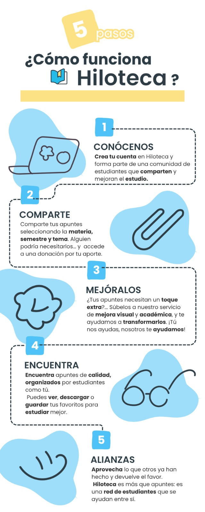
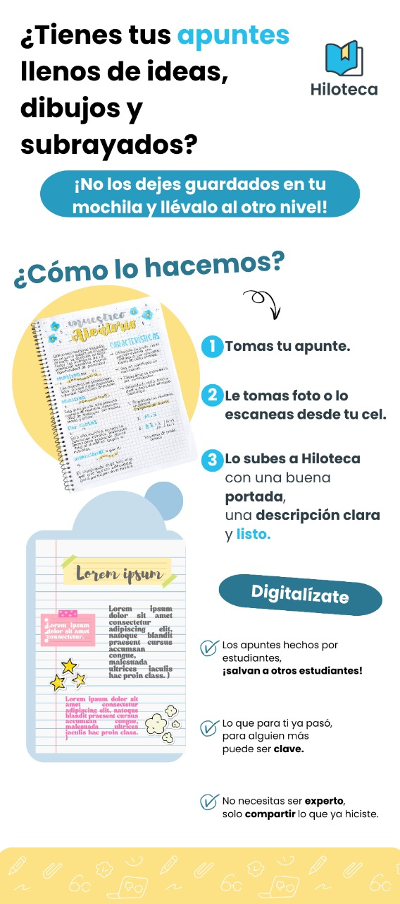

Cómo usar la plataforma
Aprende paso a paso cómo sacarle provecho a todas sus funciones.

Infografía que explica el funcionamiento de Hiloteca en 5 pasos: crea tu cuenta, comparte tus apuntes, mejora su presentación, encuentra material de calidad y forma alianzas dentro de una red de estudiantes que se apoyan entre sí.

Infografía que muestra cómo digitalizar tus apuntes en Hiloteca: toma foto o escanea tus notas, súbelas con una portada y descripción, y comparte contenido útil con otros estudiantes. ¡Lo que ya hiciste puede ser clave para alguien más!
Guía en video
Próximamente podrás ver aquí el paso a paso en formato audiovisual.